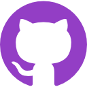

-

- 
-

I’m a Colombian-Canadian web engineer currently making something I love at Huge. Javascript and accessibility are my
jam.
I started learning to code after a six year career in marketing and communications. I got my foot in the door at Talos
where I worked on twin platforms for managing real estate assets and then I moved to Huge where I’m working on projects
for Google like Test My Site and Google for Education.
Outside of work, I’ve used my past experience building communities to co-organize PionerasDev and JSConf Colombia.
Getting involved in these communities has inspired me to give talks on topics like accessibility, JavaScript and writing
great proposals for conferences. I’ve spoken at PionerasDev, MedellinJS, the University of Antioquia, React Medellin,
Huge and Fluent Conf.